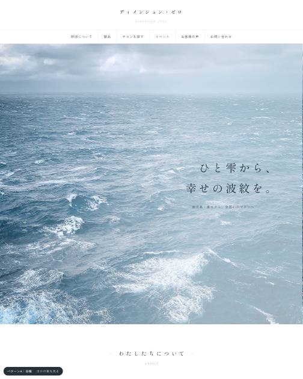
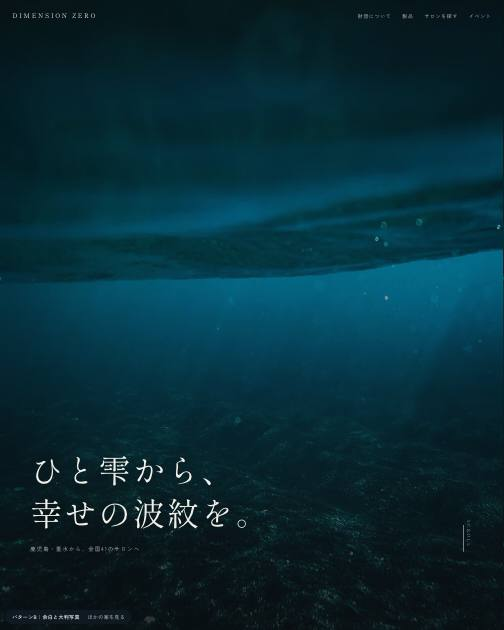
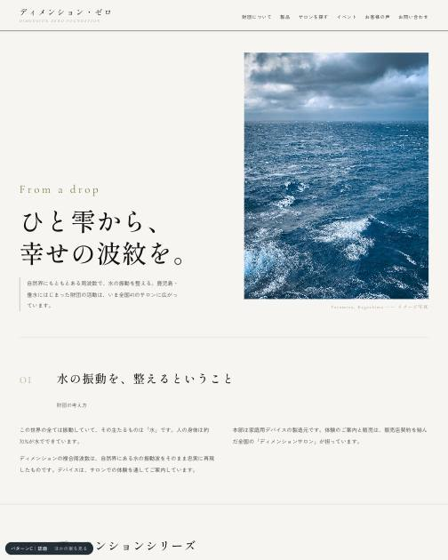
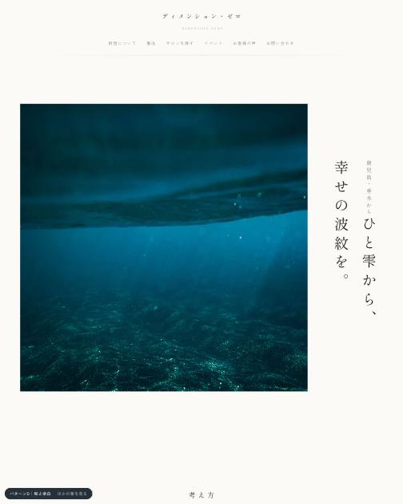
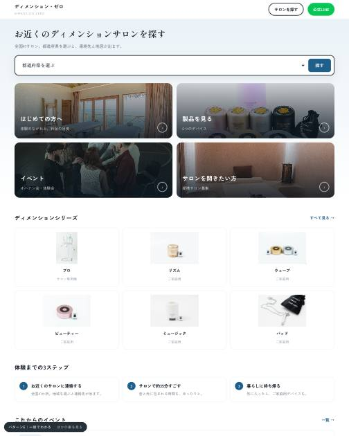

「文字を少なく、写真を多く」のご要望をふまえ、作りを一度リセットして5案つくりました。内容（文章・写真）は5案とも同じにしてあります。違うのは見え方だけですので、そのまま比べていただけます。
案Aがご参考サイト（シックスセンスラボ様）にいちばん近い作りです。右にいくほど、違う方向に振っています。





ぜんぶを1案に決める必要はありません。良いと思った部分を選んでいただければ、組み合わせて1つのサイトにします。
| 部分 | 案A 白磁 | 案B 余白と大判写真 | 案C 誌面 | 案D 和と余白 | 案E 一目でわかる |
|---|---|---|---|---|---|
| トップの第一印象開いた瞬間に目に入るところ | |||||
| メニューの出し方どこに何があるかの示し方 | |||||
| 製品の見せ方6つのデバイスの並べ方 | |||||
| サロンの探し方売上の入口。いちばん大事なところ | |||||
| お客様の声体験された方の言葉 | |||||
| イベントの出し方オハナシ会・体験会の告知 | |||||
| 全体の色と文字サイト全体の空気 |
写真の雰囲気、入れたい言葉、気になる点など、思いついたことをこちらへ。決定メモに一緒に入ります。
選んだ内容はこの端末に保存されます（このページを閉じても残ります）。